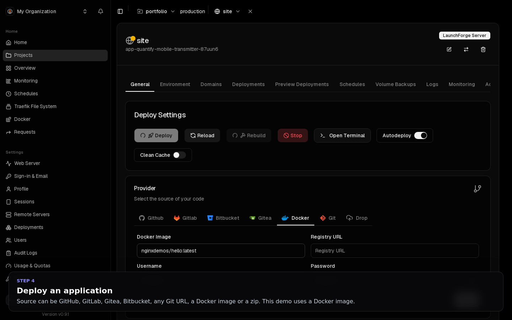

Deploy
Applications
An application is one container, built from source or pulled as a prebuilt image.
Sources#
Choose the source under General → Provider.
| Provider | Use when |
|---|---|
| GitHub, GitLab, Gitea, Bitbucket | The repository is on a connected Git provider. Enables autodeploy and, for GitHub, preview deployments. |
| Git | Any Git URL. Private repositories work over SSH with a deploy key from Settings → SSH Keys. |
| Docker | A prebuilt image (nginx:1.27, ghcr.io/you/api:1.4), optionally from a private registry. |
| Drop | Upload a zip of the source. |

Git providers#
Connected accounts are listed under Git Providers, right under Projects in the sidebar.
- Signed in with GitHub? Your GitHub account is added automatically, named
GitHub · <login>with the badge Signed in with GitHub. No GitHub App is needed. GitHub sign-in asks for thereposcope, so private repositories work too. - GitHub Apps, GitLab, Bitbucket and Gitea can still be added there.
Each workspace connects its own accounts, so nobody can deploy another workspace's private repositories.
Import a Git repository#
The fastest way to deploy a repository is the Import a Git repository card on Home. If you signed in with GitHub, or clicked Connect GitHub on Home to link your GitHub account, your repositories are listed there with search.
- Click Import next to a repository.
- Check the Branch (it defaults to the repository's default branch) and the Port your app listens on (default 3000).
- Click Deploy.
LaunchForge then:
- creates a project named after the repository, with a
productionenvironment; - creates an application with the repository as its GitHub source and the environment variable
PORT=<port>; - generates a
traefik.medomain routed to that port; - turns on autodeploy and queues the first deployment;
- opens the application's Deployments tab.
When the dashboard is reachable from the internet (a public hostname or IP address), a GitHub push webhook is created on the repository, so every push redeploys. On localhost or a private address this step is skipped; redeploy by hand instead.
Everything can be changed afterwards in the application's settings.
Build types#
Choose how the source becomes an image under General → Build type:
- Nixpacks detects Node, Python, Go, PHP, Ruby, Java, Rust and more.
- Railpack, Heroku buildpacks and Paketo buildpacks are alternative auto-detecting builders.
- Dockerfile builds your own Dockerfile, with build path, context, target stage, build arguments and BuildKit secrets.
- Static serves files with nginx.
For single-page apps built with Nixpacks, set Publish directory (for example dist or build) and the built folder is served by nginx.
Recommended build type by language#
| Stack | Recommended build type | Notes |
|---|---|---|
| Node.js, Express, NestJS | Nixpacks | Uses the start script; set PORT if your app reads it |
| Next.js | Nixpacks | next build and next start, port 3000 |
| React, Vite, Angular SPA | Nixpacks with Publish directory (dist or build) |
Served by nginx; enable the SPA option for client-side routing |
| Python (Django, Flask, FastAPI) | Nixpacks or Railpack | Detects requirements.txt or pyproject.toml; set the start command if needed (gunicorn app:app -b 0.0.0.0:8000) |
| PHP, Laravel | Nixpacks | |
| Go | Nixpacks or Dockerfile | |
| Java, Spring Boot | Nixpacks (Maven or Gradle) or Paketo buildpacks | |
| Ruby, Rust, Elixir, .NET | Nixpacks, Railpack or Heroku buildpacks | |
| Anything else | Dockerfile | Supports build path, target stage, build args and BuildKit secrets |
| Plain HTML | Static |
Builds stop after BUILD_TIMEOUT_SECONDS (default one hour).
Deploy controls#
The buttons on the General tab:
| Control | What it does |
|---|---|
| Deploy | Builds and rolls out the current source and settings. |
| Rebuild | Builds again without the cache. |
| Stop | Scales the service to zero. |
| Autodeploy | Deploys on every push to the branch. |
| Watch paths | Deploys only when files matching these patterns change. |
How a release replaces the running version, and how to roll back, is in Deploys and rollbacks.
Configuration#
- Environment: runtime variables,
KEY=valueper line, encrypted at rest. See Environment variables. - Build args and build secrets: for Dockerfile builds. Secrets are passed with BuildKit and never stored in the image.
- Resources (Advanced → Resources): CPU and memory limits and reservations. In a workspace with a quota, services without limits run with the default limits and count against the quota.
- Replicas and placement (Advanced → Cluster Settings): run several copies behind the same domain, the registry used to share images with other nodes, and placement constraints.
- Swarm settings (Advanced → Swarm Settings): health check, restart, update and rollback policies, labels, mode, network attachments and stop grace period.
- Ports (Advanced → Ports): publish a container port (TCP or UDP) on the server directly, for non-HTTP traffic such as a game server.
- Volumes and file mounts (Advanced → Volumes): named volumes, bind mounts outside system directories (see the workload policy), and file mounts whose content you edit in the dashboard.
- Run command (Advanced → General): override the container's command and arguments.
- Build server (Advanced → Build Server): build on a dedicated server and deploy the image elsewhere. See Servers and scaling.
- Networks (Advanced → Networks): attach the service to extra networks in your workspace.
Logs, monitoring and terminal#
| Tab | What it shows |
|---|---|
| Deployments | Every build with its full log, commit, duration and status. Cancel stops only this service's build. |
| Logs | Live and recent container logs, with search and line limits. |
| Monitoring | CPU, memory, network and disk I/O of the running container, as live charts. |
| Terminal (General → Open terminal) | A shell inside the running container, if your role allows it. |
Patches#
The Patches tab applies file changes on top of the cloned repository at build time, without committing them. Use it for a config file with server-specific values that you do not want in Git.
Schedules#
The Schedules tab runs a command inside the container on a cron schedule, for example a nightly cleanup script or a cache warm-up.
Volume backups#
The Volume Backups tab archives a named volume to S3 storage on a schedule. See Backups.